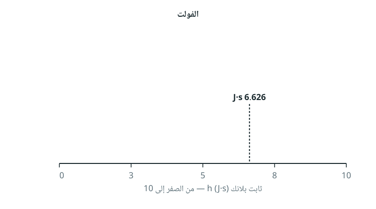

الفولت
Volt
الفولت وحدة فرق الجهد الكهربائي في النظام الدولي، ورمزه V، ويساوي جولاً لكل كولوم. يُعرَّف عبر ثابت بلانك والشحنة الأولية، فالفولت هو فرق الجهد الذي يبذل جولاً واحداً لنقل كولوم واحد.
الفولت هو وحدة فرق الجهد الكهربائي والقوة الدافعة الكهربائية في النظام الدولي للوحدات، ورمزه V. وهو وحدة مشتقة تُعرَّف بأنها فرق الجهد بين نقطتين حين يُبذل جول واحد من الشغل لنقل شحنة كولوم واحد بينهما، أي 1 V = 1 J/C. وبما أن الجول يُعرَّف بثابت بلانك والكولوم بالشحنة الأولية، فإن الفولت في النظام الحالي يُعبَّر عنه بحاصل قسمة ثابت بلانك على الشحنة الأولية مضروباً في تردد، وهو ما يجعله مرتبطاً بثوابت أساسية لا بجسم مرجعي. والجهد كمية قياسية لا اتجاه لها، لكن الفرق بين جهدين هو ما يُقاس ويُستعمل، لأن الجهد المطلق لا معنى له إلا بنقطة إسناد. مثال: بطارية 12 فولت تبذل 12 جولاً لنقل كل كولوم من طرفها السالب إلى موجبها.
كيف تعمل الظاهرة؟
فرق الجهد يقيس الطاقة الكامنة لكل وحدة شحنة بين نقطتين في مجال كهربائي. حين تنتقل شحنة موجبة من نقطة جهدها أعلى إلى نقطة جهدها أدنى، تفقد طاقة كامنة كهربائية تتحول إلى شغل أو حرارة. وفي الدارة، يرفع المصدر جهد الشحنات ببذل شغل عليها، ثم تُفقد هذه الطاقة في المقاومات والمحركات والمصابيح. ولذلك فالفولت مقياس طاقة لكل شحنة، لا مقياس شحنة ولا مقياس قدرة. وفي المجال الكهربائي الساكن يساوي فرق الجهد سالب تكامل المجال على المسار، وهو ما يجعله مستقلاً عن المسار في المجال الساكن.
العلاقة بالأرقام
1 V = 1 J/C = 1 W/A. وV = W/Q. وP = V·I. وE = Q·V. وفي المقاومة V = I·R. والقدرة في مقاومة P = V²/R = I²·R. مثال: مقاومة 6 Ω يمرّ بها تيار 2 A فالجهد عليها V = 12 V والقدرة P = 24 W. ومصباح 60 W على 220 V يسحب I = 60/220 = 0.273 A ومقاومته R = 220/0.273 = 806 Ω.
مفاهيم متقاربة
الفولت طاقة لكل شحنة، والأمبير شحنة لكل زمن، والواط طاقة لكل زمن؛ والعلاقة P = V·I تجمع الثلاثة. والفرق عن القوة الدافعة الكهربائية أن الأخيرة خاصية المصدر وتُقاس بلا حمل، وفرق الجهد عند الأطراف يقلّ عنها بمقدار I·r الداخلي. والفرق عن الجهد المطلق أن الجهد المطلق يحتاج نقطة إسناد، والمقيس دائماً فرق. وفي التيار المتردد يُقال جهد فعّال أو عظمي أو ذروة إلى ذروة، والثلاثة مختلفة.
حدود التطبيق
لا معنى للجهد المطلق بلا نقطة إسناد، فكل قياس جهد هو فرق. وفي الدارات ذات الترددات العالية لا يبقى الجهد موحّداً على طول الموصل، ويصير وصف «جهد النقطة» تقريباً. وفي الأنظمة النسبية لا يبقى فرق الجهد كمية بسيطة عند تبديل الإطار المرجعي، لأن المجالين الكهربائي والمغناطيسي يختلطان. ولا يُستعمل الفولت لقياس طاقة كلية، فذلك شأن الجول.

| الكمية | القيمة | المصدر |
|---|---|---|
| علاقة الفولت بالوحدات المشتقة | 1 V = J/C = W/A | [3] |
المصادر
- 1 The International System of Units (SI), 9th edition (2019) — BIPM — Bureau International des Poids et Mesures (2019). www.bipm.org/en/publications/si-brochure · اطُّلع عليه 2026-11-21
- 2 CODATA Value: elementary charge — NIST — CODATA 2022 recommended values (2024). physics.nist.gov/cgi-bin/cuu/Value?e · اطُّلع عليه 2026-11-21
- 3 The International System of Units (SI), 9th edition (2019) — BIPM — Bureau International des Poids et Mesures (2019). www.bipm.org/en/publications/si-brochure · اطُّلع عليه 2026-11-21
استشهد بهذا المصطلح
الصيغتان مبنيتان من بيانات الصفحة نفسها: العنوان والتاريخ ورابط النسخة المنشورة.
الفولت — Volt. (2026). ديوان المعرفة — انفراد. https://infiradev.com/diwan/terms/term-volt.html
@misc{term-volt2026,
title = {الفولت},
titleaddon = {Volt},
howpublished = {{ديوان المعرفة — انفراد} — مرجع علمي عربي},
year = {2026},
url = {https://infiradev.com/diwan/terms/term-volt.html},
urldate = {2026-11-26},
note = {مراجعة علمية: hermes (مراجعة معتمدة 2026-11-26)}
}
راجعه: hermes (مراجعة معتمدة 2026-11-26) · 2026-11-26 · آخر تحديث 2026-11-21